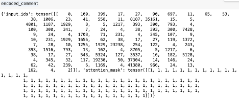
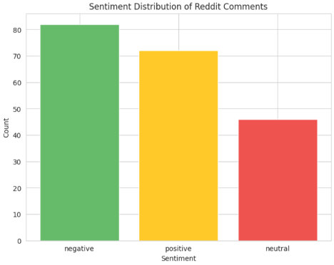

Sentiment Analysis of Reddit Comments Using RoBERTa
Project Overview
This project applies sentiment analysis to Reddit comments using RoBERTa, a powerful NLP model developed by Meta AI. RoBERTa is fine-tuned on millions of tweets and can be used to classify text as positive, neutral, or negative, making it well-suited for analyzing online discussions. RoBERTa is available on Hugging Face, a platform hosting 900k+ models, 200k+ datasets, and 300k+ demo applications, fostering collaboration in machine learning.
✽ The full article can be found on my page on medium.com.
✽ The corresponding code can be found in github.
Table of Contents
1. Install Dependencies
Let's instal the required library to use RoBERTa:
And let's load the model and tokenizer:
In the first post of this, I extracted Reddit post and comments from the subreddit NYC Apartments. This is dataset that is used in this project; it consists of 200 sample rows with over 8,000 comments.
Let's take a sample comment:
If I had to guess, I would classify this comment as positive — I see positive keywords like ‘positive’, ‘never gets old’, ‘no bugs’, ‘worth it’. Let's use machine learning to classify it as positive, negative, or neutral.
2. Tokenize the Text and Model Prediction
To prepare the comment for RoBERTa, we need to convert it into a format the model understands. This means using the tokenizer to transform the text into numerical representations:
Note that I set max_length to 512 because this model can process up to 512 tokens at a time.
This limit ensures that our input fits within the model's capabilities.
Let's take a closer look at what encoded_comment consists of:

input_ids represent the numerical values of the words in the text, and
attention_mask is a tensor with 1's or 0's indicating which tokens should be attended to during processing.
Next, let's make some predictions:
Here is an example of what output looks like - it contains the logits:
SequenceClassifierOutput(loss=None, logits=tensor([[-1.9768, 0.1379, 2.0923]], grad_fn=<AddmmBackward0>), hidden_states=None, attentions=None)
3. Interpreting Model Output
The model returns raw logits, which must be converted into probabilities:
Example output:
As a final step, we need to map these probabilities to the sentiment labels:
Once we have performed this across the entire data, we can sample some comments and print their sentiment and probabilities:
Here are the sample results (up to 200 characters):
congratulations what site did you use for a rent stabilized place? my first place in nyc 10 years ago was a room with 4 other roommates in a walk up. fast forward 10 years and my dream apartment (also
Sentiment: positive
Probability: 0.929
34 market is a great example of this tax being totally needed also my building is half empty and units are infested with rats because no none lives in them some have broken windows which makes the
Sentiment: negative
Probability: 0.599
bring back mitchell llama and public housing developments, if the private sector won’t build, swing the pendulum back to the public sector. watch the prices drop as supply returns. i have very little
Sentiment: neutral
Probability: 0.535
4. Visualization
To get a clearer view of our sentiment analysis results, let’s plot a few charts
showing the distribution of positive, neutral, and negative comments. This will help us quickly understand which sentiment is most prevalent in our data.
- Sentiment distribution - a big majority of comments are negative
- Sentiment probability distributions: positive and negative are wider ranging and neutral is smallest
